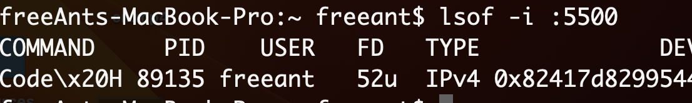

lsof 查看占用端口的进程
lsof全称是list open files表示列出当前系统打开文件的工具。在linux环境下，任何事物都以文件的形式存在，通过文件不仅仅可以访问常规数据，还可以访问网络连接和硬件。
因此我们也可以打开占用某个端口的“文件”，并展示其详情
lsof -i :22
下面是查看5500端口的占用情况，可以看到进程ID（PID）为89135。接下来我们可以根据PID来杀死该进程 
根据PID杀死进程
kill -9 pid
比如kill -9 89135会杀死刚刚查询到的进程
 杀死进程, 端口占用
杀死进程, 端口占用